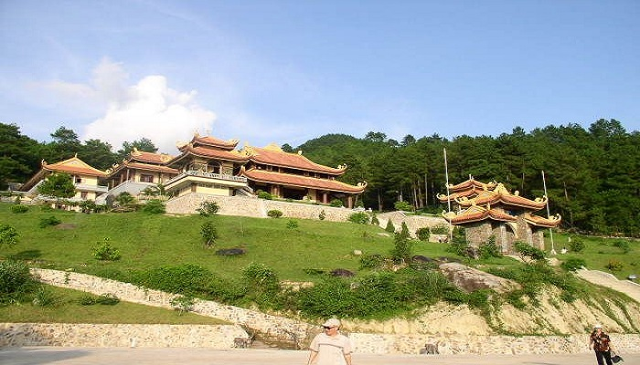
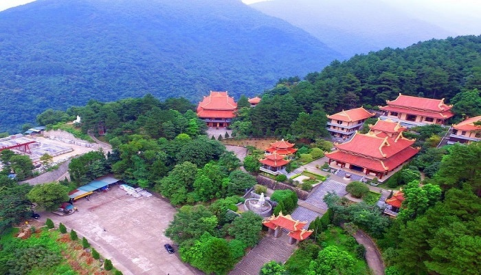

Khu danh thắng Tây Thiên
Đến khu danh thắng Tây Thiên du khách sẽ được chiêm ngưỡng con Rồng xanh nằm sừng sững với ba ngọn núi: Thạch Bàn, Thiên Thị, Phù Nghĩa chạy dài 50km theo hướng Tây Bắc - Đông Nam.
Vị trí: Khu danh thắng Tây Thiên thuộc xã Đại Đình, huyện Tam Đảo, tỉnh Vĩnh Phúc. Đặc điểm: Là một khu du lịch với đa dạng sinh học và có hệ thực vật phong phú. Tây Thiên cũng là nơi du lịch tâm linh nổi tiếng của tỉnh Vĩnh Phúc.
Khu danh thắng Tây Thiên nằm cách Thủ đô Hà Nội chưa đến 70km, điểm du lịch ở Vĩnh Phúc này tọa lạc trong lòng chảo rừng nguyên sinh Tam Đảo, tại trung sơn điểm giữa các huyệt mạch quốc gia gồm Đền Hùng thời các vua Hùng dựng nước, Hoa Lư của cố đô nước Đại Việt, núi Tản - Sông Đà, các trụ xứ phật giáo thâm uy như Chùa Hương, Yên Tử. Tất cả tạo nên một thế phong thủy vững chãi dựa vào mạch núi thiêng tỏa ra đồng bằng rộng mở và tràn xuống phương Nam, hướng về biển lớn.
Đến với danh lam thắng cảnh ở Vĩnh Phúc này du khách sẽ được hòa mình vào miền non nước tú lệ, kỳ bí bởi suối reo, thác đổ, khi uốn lượn quanh co, róc rách lúc tuôn trào tỏa ra êm đềm xanh trong dưới thung lũng. Du khách như được đi trong không gian âm hưởng “thiên thai” thần tiên của Văn Cao, với hồ sen, khe giải oan, vườn tiên, am gió, thang mây, thác bạc... tất cả đều ẩn hiện dưới biển mây bồng bềnh trên miền cổ tích. Hệ thống cáp treo sẽ đưa du khách lướt trên bức tranh Thủy mặc mênh mông, huyền ảo, thời tiết nắng và gió sẽ làm bừng nên một không gian đa sắc màu của suối bạc, trúc xanh, thông biếc, hoa ngàn...
Đến với khu danh thắng Tây Thiên du khách không chỉ được hòa mình vào khung cảnh thiên nhiên non nước hữu tình mà còn được thanh thản và tịnh tâm bởi nơi đây có Thiền Viện Trúc Lâm Tây Thiên - một trong ba thiền viện lớn nhất Việt Nam, bên cạnh đó là Thiền Viện Trúc Lâm An Tâm. Ở đây còn có tượng Phật bà Niết bàn bằng đá trên vách núi và vườn tượng trên nền cỏ xanh biếc dưới tán thông reo. Tây Thiên từ lâu đã trở thành một khu di tích, danh lam thắng cảnh có giá trị nhiều mặt, nơi đây vừa được coi như một quần thể di tích kiến trúc, vừa có cảnh quan sơn thủy hữu tình, địa thế “long chầu, hổ phục”… đã biến Tây Thiên thành điểm du lịch tâm linh ít nơi nào sánh kịp. Cùng Du lịch Việt Nam đặt tour du lịch Vĩnh Phúc ngay hôm nay để được đến thăm khu danh thắng nổi tiếng này.